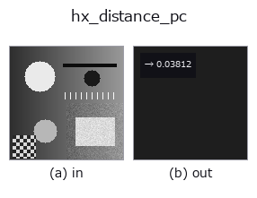

halcon_ext op• Data kinds: contour → feature
• Call: fullseye.apply(img, "hx_distance_pc", a=0.5, b=0.5) (the 2-D model is one image plus two scalar knobs a,b∈[0,1])
• HALCON equivalent: distance_pc (the HALCON reference is a useful guide to its meaning and parameters)

*The figure is the actual output on a synthetic 128×128 input. Left: input, right: output. Point clouds are drawn as a top-down scatter (brightness = z), 1-D series as a line plot, volumes as the maximum-intensity projection along z, videos as the middle frame, complex images as magnitude; return values that are not pictures are shown as the values themselves.*
Sweeping knob a (0.1 / 0.5 / 0.9, the other knob at its default):
▸ hx_distance_pc: knob a sweep (docs site)
Sweeping knob b (0.1 / 0.5 / 0.9, the other knob at its default):
▸ hx_distance_pc: knob b sweep (docs site)
Stages (the ops that come before → this op, left to right):
▸ hx_distance_pc: stages (docs site)
The minimum distance from the query point (normalised a, b) to the contour (a feature).
> The detailed description below is the original text — the summary and the headings are translated.
正規化座標 `(a, b) のクエリ点 q = (a*H, b*W)` から、全 contour の頂点までのユークリッド距離の最小値を
`max(H, W) で割って 1 で頭打ちした np.float64` で返す。
• `a` → クエリ点の行(0〜1)。
• `b` → クエリ点の列(0〜1)。
• contour の点が無ければ 0.0(点が contour 上にある場合と区別できない)。
距離は頂点までであって線分までではないので、点の間隔が粗い contour では真の距離より最大で「点間隔の半分」程度
大きく出る。細かい contour(`edges_sub_pix` の 1 画素刻み)ではほぼ一致する。region までの距離は
`hx_distance_pr、水平線からの距離は hx_distance_sc、点を含む contour の選択は hx_select_xld_point`。
• gallery2d_halcon_ext family guide
• Sample-data catalog (download URLs / licences) — 2-D uses skimage.data (BSD/public domain) plus synthetic images; 3-D lists download URLs for real data sources (Stanford, PDS, …).
• Operator provenance and references — the sources of the research/methods this op family came from.
• The canonical algorithm (author, year) and its uses are named in the family usage guide above.
The program below has been verified to run (same input as the figure). In Studio's help this block becomes buttons that load and run it on the spot.
threshold 0.50 0.50 sk_find_contours 0.50 0.50 hx_distance_pc 0.50 0.50
▸ Load this pipeline · Load & run
• gallery2d_halcon_ext — py -3.11 examples/gallery2d_halcon_ext.py
feature as input)halcon_ext)hx_gen_circle · hx_gen_ellipse · hx_gen_rectangle2 · hx_gen_checker_region · hx_gen_grid_region · hx_gabor · hx_fit_surface1 · hx_fit_surface2
*Provenance: ops.py — 2D operator registry. This per-op note is generated by tools/opdocs.py md (do not hand-edit).*
© 2026 Kazufumi Furuse — Fullseye operator documentation. Licensed under Apache-2.0.
{kind=link}
{kind=link}
{kind=link}